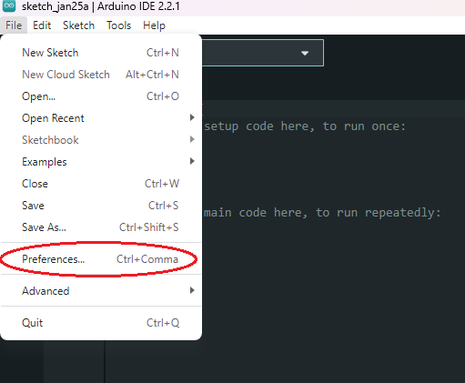
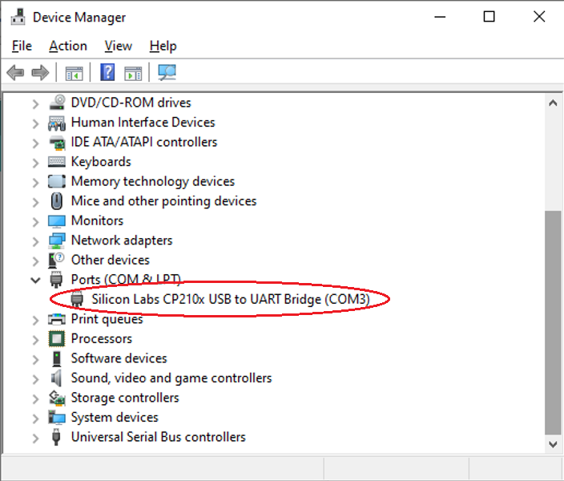
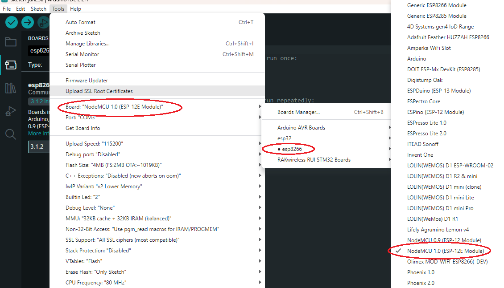
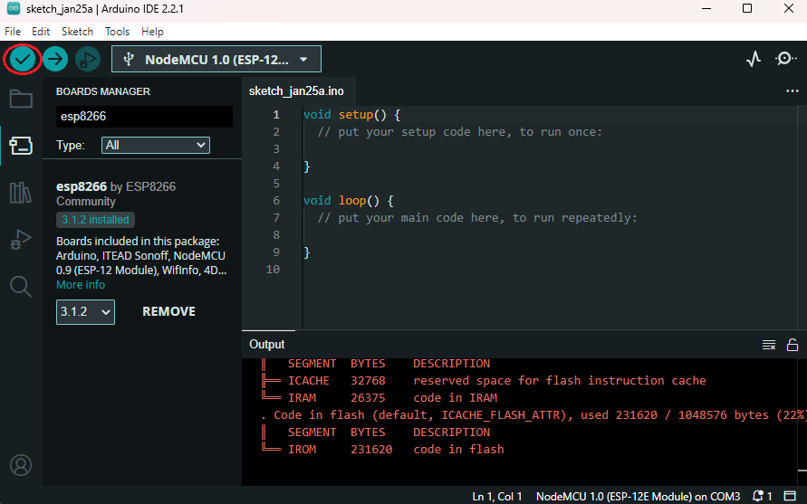
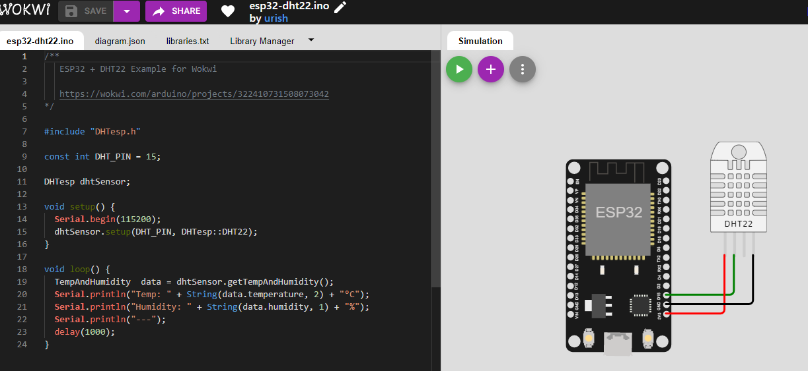

Instalasi dan Konfigurasi
Topik Pembahasan
- Instalasi & Konfigurasi software & Hardware pendukung
- Pengoperasian software pendukung (Arduino IDE, Fritzing, Visual Studio Code)
- Penambahan library external
- Dasar pemrograman smart device dan Writing program menjadi embedded system
Kemampuan Akhir yang Diharapkan
- Mahasiswa mampu melakukan Instalasi & Konfigurasi software & Hardware pendukung
- Mahasiswa mampu menggunakan Arduino IDE, VS code platform io, dan Fritzing
- Mahasiswa dapat merangkai MCU dengan beberapa sensor, aktuator dan LCD
- Mahasiswa mampu membuat kode sederhana MCU dan Writing
Langkah Praktikum
- Install Arduino IDE, download dari link https://www.arduino.cc/download_handler.php?f=/arduino-1.8.12-windows.exe.

- Buka aplikasi arduino IDE
- Buka menu File > Preferences. 
- Pada kolom "Additional Boards Manager URLs", tulis atau copy-paster alamat berikut
https://arduino.esp8266.com/stable/package_esp8266com_index.json. kemudian klik OK. Buka menu Tools > Board > Board Manager. Tuliskan "esp8266" dalam kolom search field. Kalimat "esp8266 by ESP8266 Community" akan nampak pada daftar di bawahnya, pilih dan klik tombol Install di sebelah kanan bawah.

Tuliskan pada pencarian
esp8266Klik tombol install, jika gagal turunkan versinya dari 2.6.3 ke 2.6.1. Yang terakhir ketika modul ini dibuat adalah versi 2.7.3, tetapi bukan untuk NodeMCU atau ESP8266 yang digunakan praktikumProses installasi ditunjukkan progress bar seperti pada gambar di bawahi ini

Buka menu dan pilih Tools > Board Manager > NodeMCU 1.0 (ESP-12E Module) Ketika proses installasi telah selesai dan telah memilih board, seharusnya akan tampil
NodeMCU 1.0 (ESP-12E Module)Sekarang masukkan kabel data USB dari NodeMCU ke Laptop, kemudian cek terlebih dahulu di Control Panel > Device Manager. Gambar di bawah menunjukkan bahwa interface antara NodeMCU dan Laptop Windows 10 telah terhubung melalui PORT COM3 (alamat COM setiap orang tidak selalu sama, tergantung dari komputer masing-masing). 
Ketika port belum terdeteksi, maka harus install terlebih dahulu drivernya yang dapat diunduh di https://www.silabs.com/products/development-tools/software/usb-to-uart-bridge-vcp-drivers
Ketika menggunakan sistem operasi Mac OS akan terdeteksi di
/dev/tty.SLAB_USBtoUART, bukan /dev/tty.Bluetooth-Incoming-Port**Buka aplikasi Arduino IDE, pilih menu Tools > Board, yang semula defaultnya mungkin “Board: Arduino / Genuino Uno” menjadi “NodeMCU 1.0 (ESP-12E Module)”
Board NodeMCU adalah board yang saat ini, NodeMCU 1.0 (ESP-12E Module) aktif

Buka aplikasi Arduino IDE pada menu Tools > Port > COM3 (sesuaikan dengan nomor port masing-masing) .

Jalankan aplikasi standard seperti di bawah ini, kemudian klik tombol centang di bagian toolbar atas. 
Jika tidak ada pesan error, berarti instalasi sukses dan siap digunakan
Fritzing Designer
Fritzing designer adalah aplikasi untuk membuat skema pengabelan untuk komponen-komponen yang dibutuhkan, misalnya Micrcontroller Unit (NodeMCU, Arduino dll), berbagai jenis module sensor dan aktuator serta komponen-komponen pendukung lainnya.
Aplikasi Fritzing tidak wajib diinstal, aplikasi ini hanya sekedar membantu Anda menggambar suatu rangkaian sebagai bahan ilkustrasi untuk memudahkan pemahaman saat dilakukan pengkabelan komponen atau modul.
Ikuti langkah berikut ini untuk meng-install aplikasi Fritzing
- Download file ZIP Fritzing di website berikut http://fritzing.org/download/. Pilihan file Fritzing disesuaikan dengan sistem operasi Windows yang Anda miliki, misalnya 32bit atau 64bit.
Misalkan terjadi masalah karena ketika proses download, beberapa yang alternatif yang bisa dicoba
- Sebagai contoh file Fritzing windows 32bit adalah
fritzing.0.9.3b.32.pc.zip.Kemudian uraikan file ZIP tersebut dengan aplikasi 7z, Winzip atau sejenisnya. Jalankan Aplikasi Fritzing Fritzing.exe. Jika sukses maka tampilan fritzing akan seperti tampak pada Gambar 2.9.

Anda tinggal melakukan drag dan drop gambar komponen di sebelah kanan ke media rancangan di sebelah kiri. Jika komponen
yang dibutuhkan tidak ditemukan, maka Anda dapat men-download library komponen tambahan yang dapat diperoleh di internet
(biasanya file yang berekstensi .fzpz). Selanjutnya lakukan import terhadap file library .fzpz untuk dimasukkan ke
library komponen baru.
 Berikut contoh penggunaan fritzing deigner
Berikut contoh penggunaan fritzing deigner

Jika menginginkan import board node MCU bisa menggunakan contoh file ini NodeMCU-V3.0.fzpz
Kemudian untuk power supply agar tidak perlu langsung menghubungkan ke Node MCU dapat menggunakan Power Supply

Visual Studio Code
Visual studio code merupakan sebuah editor yang sangat powerfull karena banyak sekali mendukung bahas pemrograman yang digunakan, selain itu terdapat fitur atau fungsi yang diberi nama IntelliSense. Dengan menggunakan IntelliSence, kita akan disuguhkan sintax highlighting dan autocomplete yang sangat membantu. Tidak hanya digunakan untuk membuat program di komputer, dengan menggunakan VS Code kita juga bisa membuat program pada microcontroller seperti Arduino, ESP8266, ESP32, dan yang lain.
VS Code dapat diunduh secara gratis di sini, kemudian agar kita dapat membuat program
di
controller dibutuhkan sebuah extensions PlatformIO.
Silakan buka aplikasi Visual Studio Code, kemudian klik icon extensions dan ketik
PlatformIO IDEseperti ditunjukkan pada gambar di bawah ini
Ketika berhasil maka akan ditambahkan icon berbentuk seperti alien pada sebelah kiri sidebar, di bawah icon extensions. Untuk lebih jelasnya dapat dilihat pada gambar berikut
Silakan membuat project baru dengan memilih
New Project, sehingga akan muncul wizard seperti di bawah ini. IsikanNameadalahvs-program1, pada bagianBoardketikESP8266dan pilihEspressif ESP8266 EFSP-12E, pada bagianFrameworkpilihArduino, selanjutnya yang terakhirLocationuntuk lokasi penyimpanan project Anda. Silakan uncheck ketika ingin mengubah lokasi penyimpanan direktori yang lain.Setelah klik tombol Finish, kita akan dibuat template project dengan struktur folder seperti di bawah ini
├── .gitignore ├── .pio │ └── build ├── .vscode │ ├── c_cpp_properties.json │ ├── extensions.json │ └── launch.json ├── include │ └── README ├── lib │ └── README ├── platformio.ini ├── src │ └── main.cpp └── test └── READMEPenjelasan dari fungsi file dan direktori di atas adalah sebagai berikut
.gitignoreberisi list file atau folder yang tidak ikut di-upload atau push ke repository, git..pioadalah folder yang berisi hasil build dari board yang kita gunakan,esp12e..vscodeadalah folder untuk menyimpan file-file konfigurasi Visual Studio Code.includeadalah folder tempat menyimpan file depedensi project.libadalah folder untuk menyimpan library yang kita butuhkanplatformio.iniadalah file konfigurasi project kita, misalkan setting baudrate, library yang digunakan, dan yang lain. Isi file platformio.ini kurang lebih seperti berikut ini
Baris 11-14 telah dibuat oleh editor ketika kita membuat sebuah project, tetapi kita bisa mengubah secara manual ataupun ingin menambahkan. Misalkan kita ingin setting menyamakan baudare di serial monitor, yaitu 115200. Menggunakan property
monitor_speed = 115200.srcmerupakan folder untuk meletakkan kode yang kita buat.testadalah folder untuk meletakkan kode dengan kebutuhan unit test. Untuk lebih jelasnya secara visual dapat dilhat pada gambar di bawah ini
Pada umumnya struktur file program utama seperti pada Arduino IDE yaitu terdapat
method setup() dan method loop().setup()biasanya digunakan untuk menginisialisasi variabel dan dijalankan hanya sekali ketika program tersebut berjalan, sedangkanloop()akan menjalankan kode program yang di dalamnya berulang-ulang.Tambahkan satu baris kode pada fungsi
setup()seperti berikutSerial.begin(115200);// setbaudrate 115200Tambahkan juga kode pada fungsi
loop()seperti di bawah iniSerial.println("Hello world");// menampilkan string ke serial monitor delay(1000);// jeda 1000 msBuild project Anda menggunakan icon
buildsampai pesan pada console menunjukkanSUCCESS, untuk lebih jelaskan ditunjukkan pada gambar di bawah iniUpload project Anda untuk menjalankan program yang Anda buat pada controller dengan klik icon
Upload, dapat ditunjukkan seperti pada gambar di bawah ini. Jika muncul pesanSUCCESSberarti proses upload ke controller berhasil.Langkah terakhir adalah melihat hasil program yang Anda buat di Serial Monitor, untuk melihatnya silakan klik icon seperti colokkan listrik. Silakan lihat gambar di bawah ini
Visual Studio Code dan Wokwi
Wokwi adalah sebuah simulator elektronik online, kita dapat mengunakan untuk mensimulasikan Arduino, ESP32, dan banyak board-board terkenal yang lain, komponen-komponen dan sensor. Wokwi menyediakan extension pada Visual Studio Code sehingga dapat mensimulasikan projek secara langsung dari kode editor kita. Kita dapat menggunakan Wowki untuk VS Code dengan Zehpyr Projeact, PlatfromIO, ESP-IDF, Pi Pico SDK, NuttX, Rust, Arduino CLI, dan framework-framework development embedded lainnya serta toolchain. Saat ini Wokwi untuk VS Code dapat digunakan secara gratis dengan versi beta. Setelah beta, beberapa fitur akan tersedia untuk pengguna yang berlangganan/bayar. Untuk menggunakan Wokwi for VS Code bisa mengikuti langkah-langkah sebagai berikut
Masuk ke bagian Extensions pada VS Code seperti pada gambar di bawah ini, kemudian ketik
wokwiSilakan lakukan installasi extension tersebut, kemudian masukkan
Licence keydengan menekan tombolF1dan pilihWokwi: Manually Enter Licence Key. Untuk mendapatkan Licence key Anda harus membuat akun Wokwi terlebih dahulu atau bisa login menggunakan akun Google Anda.Selanjutnya Anda bisa mencoba contoh kode ini untuk memastikan Wokwi sudah berjalan atau belum, silakan clone kode tersebut. Ketika dibuka menggunakan VS Code akan menampilkan seperti pada gambar di bawah ini
Silakan jalankan menggunakan simulasi Wokwi dengan menekan tombol
F1dan pilihWokwi: Start Simulator, jika berhasil akan menampilkan seperti pada gambar beriku
Struktur direktori Wokwi for VS Code
Ada beberapa hal yang perlu diperhatikan struktur direktori ketika menggunakan Wokwi pada VS Code, secara umum struktur direktori dapat dilihat seperti berikut
.
├── LICENSE
├── README.md
├── diagram.json
├── platformio.ini
├── src
│ └── esp32-ntp-clock.ino
└── wokwi.toml
Keterangan dari struktur direktori di atas adalah
diagram.jsonmerupakan file json yang dibangkitkan ketika membuat projek menggunakan wokwi versi online.wokwi.tomlmerupakan deskripsi dari tautan atau link hasil compile dari VS Code.
Wokwi yang versi online dapat mengunjungi Wokwi, tampilannya dapat dilihat pada gambar di bawah ini
Banyak template atau contoh project Wokwi yang bisa digunakan untuk belajar, Wokwi versi online kita dapat menyimpan project di akun Wokwi selanjutnya bisa dibuka kembali. Di bawah ini adalah tampilan untuk Wokwi versi online

Ada beberapa bagian jika kita lihat pada gambar di atas
Editoradalah editor untuk mengetik kode.diagram.jsonadalah deskripsi dari project yang telah kita buat, berisi part atau bagian apa saja yang terdapat pada project.libraries.txtadalah daftar library yang digunakan pada project.Library Manageradalah untuk menambahkan library pada project.Tab Simulation (tombol run, tambah part, dan zoom)adalah tombol untuk menjalankan project atau menambahkan part yang akan dihubungkan pada microcontroller.
Ketika Wokwi dijalankan dapat dilihat seperti pada gambar di bawah ini
Video Pendukung
Installasi Arduino IDE
Installasi Fritzing
Installasi Arduino IDE
Tugas
- Dari aktifitas hari ini, apakah yang telah kelompok Anda lakukan. sebutkan jika terjadi kendala dari aktifitas tersebut
- Buatlah sebuah skematik sederhana dari salah satu sensor atau aktuator yang telah kelompok Anda beli, boleh menggunakan Fritzing atau Wokwi.
Buatlah kode sederhana untuk menyalakan LED merah bawaan node MCU seperti pada gambar di bawah ini